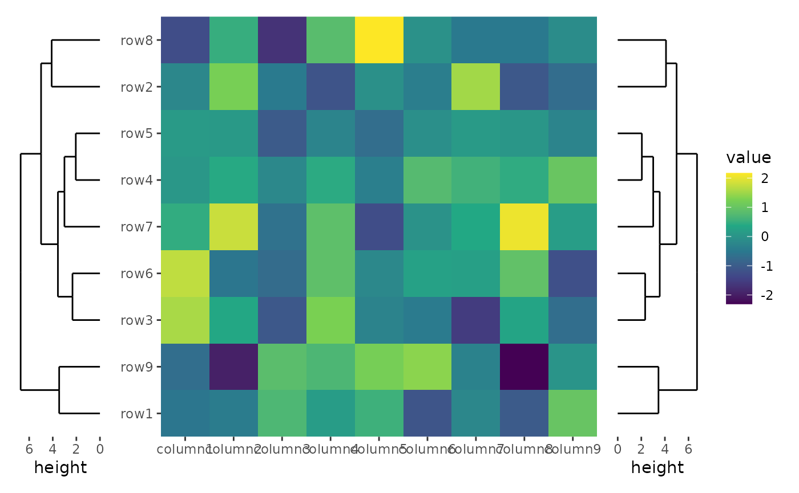
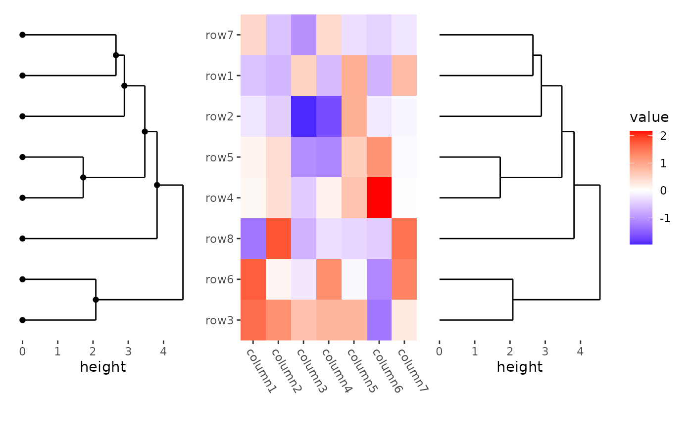
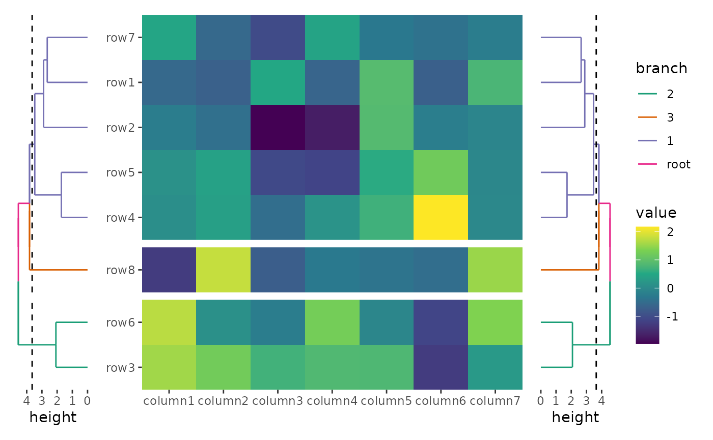
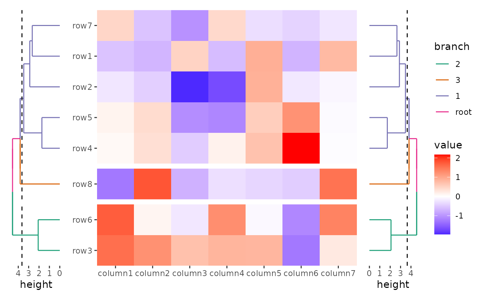
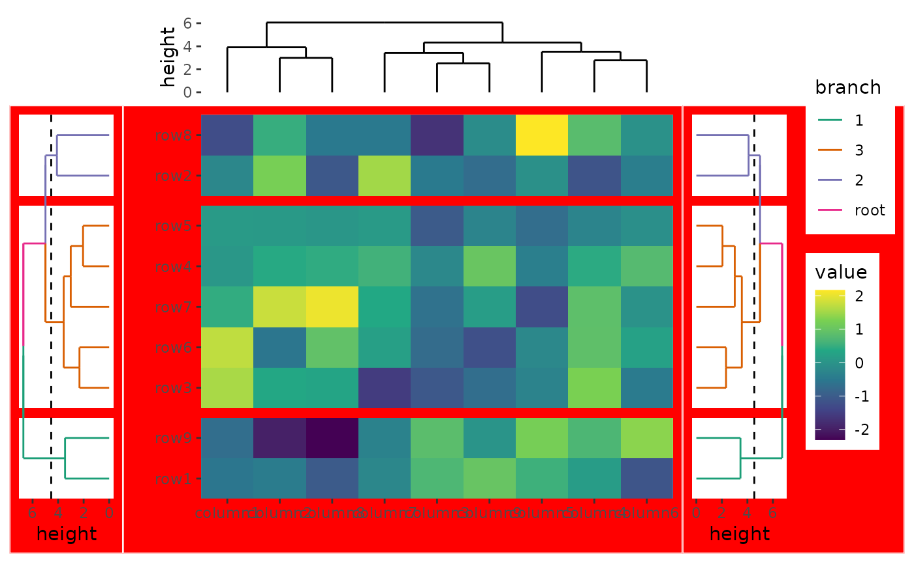
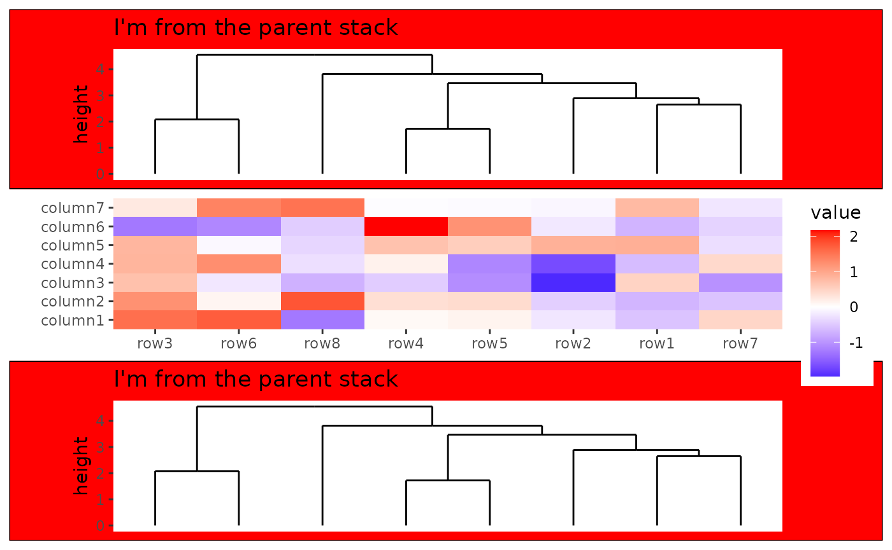
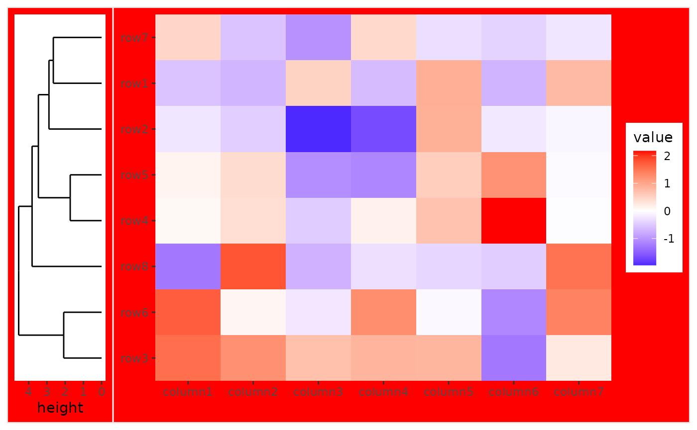

set.seed(123)
small_mat <- matrix(rnorm(81), nrow = 9)
rownames(small_mat) <- paste0("row", seq_len(nrow(small_mat)))
colnames(small_mat) <- paste0("column", seq_len(ncol(small_mat)))Operators
Addition operator
+: adds elements to the active plot in the active layout.
The + operator is straightforward and should be used as
needed.
In ggheatmap()/quad_layout(), four nested
layouts are available for annotations: top,
left, bottom, and right. If no
active annotation is set,
ggheatmap()/quad_layout() treat itself as the
active layout. Since there is only one main plot in the
ggheatmap()/quad_layout(), the main plot is
always treated as the active plot in this context.
# Initialize the heatmap; by default, no active annotation will be set.
# The active layout is the heatmap layout, and the active plot in the layout is
# the main plot.
ggheatmap(small_mat) +
# Add elements to the main plot
scale_fill_viridis_c() +
# Change the active layout to the left annotation
anno_left(size = 0.2) +
# Add a dendrogram in the left annotation
align_dendro() +
# Change the active layout to the right annotation
anno_right(size = 0.2) +
# Add a dendrogram in the right annotation
align_dendro()
#> → heatmap built with `geom_tile()`
logical AND operator
&: applies elements to all plots in the layout.
The & operator works similarly to
patchwork, applying an element across all plots in a
layout. Since & has lower precedence than
+, it’s generally best to use it at the end of an
expression or wrap it in parentheses when needed.
# Initialize the heatmap with color scales and annotations.
ggheatmap(small_mat) +
scale_fill_viridis_c() +
anno_left(size = 0.2) +
# Add a dendrogram in the left annotation and split the dendrogram into 3 groups
align_dendro(aes(color = branch), k = 3L) +
anno_right(size = 0.2) +
# Add a dendrogram in the right annotation and split the dendrogram into 3 groups
align_dendro(aes(color = branch), k = 3L) &
# Set color scale for all plots
scale_color_brewer(palette = "Dark2")
#> → heatmap built with `geom_tile()`
Subtraction operator
-: Adds elements to all plots in the active layout, as well as to any nested layouts within it (this behavior differs instack_layout(); refer tovignette("stack-layout")for more details).
Using - might seem unintuitive if you think of the
operator as "subtract", the underlying reason is that
- is the only operator in the same precedence group as
+, allowing for seamless combination with
+.
If the active layout is the
ggheatmap()/quad_layout(), -
functions similarly to &.
# Initialize the heatmap with color scales and annotations.
my_plot <- ggheatmap(small_mat) +
scale_fill_viridis_c() +
anno_left(size = 0.2) +
align_dendro(aes(color = branch), k = 3L) +
anno_right(size = 0.2) +
align_dendro(aes(color = branch), k = 3L) +
# Remove any active annotation
quad_active() -
# Set color scale for all plots, since the active layout is the `ggheatmap()`/`quad_layout()`
scale_color_brewer(palette = "Dark2") +
# No need for parentheses; we can directly add other elements
# Change the active layout to the top annotation
anno_top(size = 0.2) +
# Add a dendrogram in the top annotation
align_dendro()
my_plot
#> → heatmap built with `geom_tile()`
If the active layout is not the
ggheatmap()/quad_layout(), the -
operator will only add elements to all plots in the active annotation
stack:
my_plot +
# Change the active layout to the left annotation
anno_left() -
# Modify the background of all plots in the left annotation
theme(plot.background = element_rect(fill = "red"))
#> → heatmap built with `geom_tile()`
with_quad
Along with the - operator, with_quad() can
be used to modify the operated context in
ggheatmap()/quad_layout().
This function accepts three arguments: 1. x: The
object to be applied using the - operator. 2.
position: A string indicating the annotation stack to
target (top, bottom, left,
right, or combinations thereof). This specifies the context
for applying x. 3. main: A boolean that
determines whether x should also apply to the main plot
within ggheatmap()/quad_layout().
By default, when the active context in
ggheatmap()/quad_layout() is set to
top or bottom, the - operator
will apply changes not only to that annotation but also to the opposite
one (i.e., bottom if top is active, and vice versa). The same principle
applies to the left and right contexts. In these cases, the object will
also be applied to the main plot by default unless specified otherwise.
If no annotation stack is active, with_quad() defaults to
NULL. (this behavior differs in
stack_layout(); refer to
vignette("stack-layout") for more details)
my_plot +
# Change the active layout to the left annotation
anno_left() -
# Modify the background of all plots in the left and the opposite annotation
# in this way, the `main` argument by default would be `TRUE`
with_quad(theme(plot.background = element_rect(fill = "red")))
#> → heatmap built with `geom_tile()`
The position argument can be a string containing one or
more of "t", "l", "b", and
"r", indicating which annotation stack should be used as
the context. When the position argument is manually set,
the default value of the main argument will be FALSE. The
example above is equivalent to:
my_plot -
# Modify the background of all plots in the left and right annotation
# and the main plot
with_quad(
theme(plot.background = element_rect(fill = "red")),
"lr",
main = TRUE
)
#> → heatmap built with `geom_tile()`
Setting position to NULL removes any active
annotation stack, meaning the object will apply to all plots in the
layout, including annotation stacks:
my_plot -
# Modify the background of all plots
with_quad(theme(plot.background = element_rect(fill = "red")), NULL)
#> → heatmap built with `geom_tile()`
Session information
sessionInfo()
#> R version 4.4.2 (2024-10-31)
#> Platform: x86_64-pc-linux-gnu
#> Running under: Ubuntu 22.04.5 LTS
#>
#> Matrix products: default
#> BLAS: /usr/lib/x86_64-linux-gnu/openblas-pthread/libblas.so.3
#> LAPACK: /usr/lib/x86_64-linux-gnu/openblas-pthread/libopenblasp-r0.3.20.so; LAPACK version 3.10.0
#>
#> locale:
#> [1] LC_CTYPE=C.UTF-8 LC_NUMERIC=C LC_TIME=C.UTF-8
#> [4] LC_COLLATE=C.UTF-8 LC_MONETARY=C.UTF-8 LC_MESSAGES=C.UTF-8
#> [7] LC_PAPER=C.UTF-8 LC_NAME=C LC_ADDRESS=C
#> [10] LC_TELEPHONE=C LC_MEASUREMENT=C.UTF-8 LC_IDENTIFICATION=C
#>
#> time zone: UTC
#> tzcode source: system (glibc)
#>
#> attached base packages:
#> [1] stats graphics grDevices utils datasets methods base
#>
#> other attached packages:
#> [1] ggalign_0.0.4.9000 ggplot2_3.5.1
#>
#> loaded via a namespace (and not attached):
#> [1] vctrs_0.6.5 cli_3.6.3 knitr_1.49 rlang_1.1.4
#> [5] xfun_0.49 textshaping_0.4.0 jsonlite_1.8.9 labeling_0.4.3
#> [9] glue_1.8.0 colorspace_2.1-1 htmltools_0.5.8.1 ragg_1.3.3
#> [13] sass_0.4.9 fansi_1.0.6 scales_1.3.0 rmarkdown_2.29
#> [17] grid_4.4.2 tibble_3.2.1 evaluate_1.0.1 munsell_0.5.1
#> [21] jquerylib_0.1.4 fastmap_1.2.0 yaml_2.3.10 lifecycle_1.0.4
#> [25] compiler_4.4.2 RColorBrewer_1.1-3 fs_1.6.5 pkgconfig_2.0.3
#> [29] farver_2.1.2 systemfonts_1.1.0 digest_0.6.37 viridisLite_0.4.2
#> [33] R6_2.5.1 utf8_1.2.4 pillar_1.9.0 magrittr_2.0.3
#> [37] bslib_0.8.0 withr_3.0.2 tools_4.4.2 gtable_0.3.6
#> [41] pkgdown_2.1.1 cachem_1.1.0 desc_1.4.3